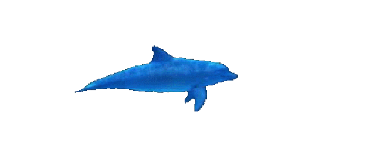

s especies que te mencionamos anteriormente absorben el carbonato de calcio que encuentran en los alimentos, el agua o en los corales. Cuando dicho compuesto es asimilado por la sangre, se acumula en un tejido de la piel llamado “manto”, que, al interactuar con unas proteínas, da pie a la formación de una sustancia llamada conquiolina.
Conforme se acumula la conquiolina en el exterior del molusco o cangrejo, se produce una especie de caparazón que crece paulatinamente hasta formar una concha de mar.
Pero no creas que ahí termina el proceso: las conchas de los moluscos siguen creciendo para ajustarse a las necesidades de su residente por medio de las “bandas de crecimiento”.
Sin embargo, el desarrollo de los exoesqueletos puede atrofiarse debido a factores como las temperaturas elevadas del agua o la presencia de metales pesados, como el magnesio o el estroncio, que llegan a sustituir el carbonato de calcio.